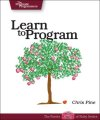
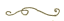

a versão
melhorada
estendida
 « o tutorial original »
- Iniciando
- Números
- Letras
- Variáveis e Atribuições
- Misturando tudo
- Mais Sobre Métodos
- Controle de Fluxo
- Arrays e Iteradores
- Escrevendo seus Próprios Métodos
- Classes
- Blocos e Procs
- Além deste Tutorial
(Versão Original por Chris Pine.)
(Tradução em Japonês por Shin Nishiyama.)
(Tradução em Francês por Jean‑Pierre ANGHEL.)
(Tradução em Russo por Mikhail Shokhirev.)
(Tradução em Dinamarquês por Gunner Carstens.)
(Tradução em Bósnio por Rusmir Gadžo.)
7. Arrays e Iteradores
Vamos escrever um programa que nos permita entrar com quantas palavras quisermos (uma por linha, até pressionarmos Enter em uma linha vazia), e depois mostre as palavras em ordem alfabética. Ok?
Então... primeiro nós iremos.. bem.. hum... Bom, poderíamos.. rsrsrs..
Certo, não sei se podemos fazer isso. Precisamos de uma forma de armazenar um número qualquer de palavras, e de podermos acessá-las sem que se misturem com as outras variáveis. Precisamos colocá-las num tipo de lista. Precisamos dos arrays.
Um array é apenas uma lista em seu computador. Cada item da lista se comporta como uma variável: você pode ver qual objeto um item está apontando, e você pode fazê-lo apontar para um outro objeto. Vamos dar uma olhada em alguns arrays:
[] [5] ['Olá', 'Tchau'] sabor = 'baunilha' # isto não é um array, claro... [89.9, sabor, [true, false]] # ...mas isto é.
Primeiro nós temos um array vazio, então um array contendo um único número, então um array contendo duas strings. Depois, temos uma atribuição simples; e aí um array contendo três objetos, sendo que o último é um outro array [true, false]. Lembre-se, variáveis não são objetos, então, nosso último array está realmente apontando a para um float, uma string e um array. Mesmo que nós mudássemos o valor de sabor, isso não mudaria o array.
Para nos ajudar a encontrar um objeto qualquer num array, cada item tem um número de indexação. Programadores (e, aliás, a maioria dos matemáticos) iniciam contando do zero, então, o primeiro item do array é o item zero. Veja como podemos referenciar os objetos em um array:
nomes = ['Ana', 'Maria', 'Cris'] puts nomes puts nomes[0] puts nomes[1] puts nomes[2] puts nomes[3] # Isto está fora do intervalo
Ana Maria Cris Ana Maria Cris nil
Vemos então, que puts nomes imprime cada nome do array nomes. Então usamos puts nomes[0] para imprimir o "primeiro" nome do array e puts nomes[1] para imprimir o "segundo"... Tenho certeza que parece confuso, mas você deve se acostumar com isso. Você deve realmente começar a acreditar que contar inicia do zero e parar de usar palavras como "primeiro" e "segundo". Se você for num rodízio de pizza, não fale sobre o "primeiro" pedaço; fale sobre o pedaço zero (e na sua cabeça pense pedaco[0]). Você tem 5 dedos na sua mão e seus números são 0, 1, 2, 3 e 4. Minha esposa e eu somos malabariastas. Quando fazemos malabares com 6 pinos, estamos equilibrando os pinos 0 a 5. Felizmente, em alguns meses, estaremos equilibrando o pino 6 (e portanto, equilibrando 7 pinos). Você saberá que conseguiu quando começar a usar o termo "zerésimo" :-) Sim, é uma palavra real.. Pergunte a um programador ou matemático..
Finalmente, nós tentamos puts nomes[3], apenas veja o que aconteceria. Você estava esperando um erro? Algumas vezes quando você faz uma pergunta, sua pergunta não faz sentido (pelo menos para seu computador); é quando obtém um erro. Algumas vezes, entretanto, você pode fazer uma pergunta e a resposta é nada. O que está na posição três? Nada. O que é nomes[3]? nil: A maneira Ruby de dizer "nada". nil é um objeto especial que basicamente significa "não é qualquer outro objeto."
Se toda esta numeração divertida de posições de array está confundindo você, não tema! Freqüentemente, nós podemos evitá-la completamente usando vários métodos de array, como este:
O Método each
each nos permite fazer algo (o que quer que nós desejemos) para each (cada em português) objeto pertencente ao array. Assim, se nós quiséssemos dizer algo bom sobre cada linguagem no array abaixo, nós faríamos isto:
linguagens = ['Português', 'Inglês', 'Ruby'] linguagens.each do |ling| puts 'Eu adoro ' + ling + '!' puts 'Você não?' end puts 'E vamos ouví-lo sobre C++!' puts '...'
Eu adoro Português! Você não? Eu adoro Inglês! Você não? Eu adoro Ruby! Você não? E vamos ouví-lo sobre C++! ...
Então, o que aconteceu? Bem, nós fomos capazes de passar por todos os objetos no array sem usar nenhum número, e isto é muito bom. Traduzindo para o português, o programa acima seria algo como: Para cada objeto em linguagens, aponte a variável ling para o objeto e então faça (do em inglês) tudo que eu disser, até que você chegue ao fim (end em inglês). (Como você sabe, C++ é uma outra linguagem de programação. É muito mais difícil de aprender do que Ruby; normalmente, um programa C++ será muitas vezes maior do que um programa Ruby que faz a mesma coisa.)
Vocês poderiam estar pensando consigo mesmos, "Isto é muito parecido com os laços de repetição (loops) que nós aprendemos anteriormente." Sim, é similar. Uma diferença importante é que o método each é apenas: um método. while e end (como do, if, else, e todas as outras palavras em azul) não são métodos. Elas são parte fundamental da linguagem Ruby, como = e os parênteses; como os sinais de pontuações no português.
Mas não each; each é um apenas um outro método do array. Métodos como each que "atuam como" loops são freqüentemente chamados iteradores.
Uma coisa para notar sobre iteradores é que eles são sempre seguidos por do...end. while e if nunca têm um do perto deles; nós apenas usamos do com iteradores.
Aqui está um outro atraente iteradorzinho, mas não é um método de array... é um método de inteiros!
3.times do puts 'Hip-Hip-Urra!' end
Hip-Hip-Urra! Hip-Hip-Urra! Hip-Hip-Urra!
Mais Métodos de Array
Então nós aprendemos each, mas existem muitos outros métodos de array... quase tantos quantos existem métodos de string! Na verdade, alguns deles (como length, reverse, +, e *) funcionam da mesma forma que funcionam para strings, exceto que eles operam em posições de array ao invés de em letras de string. Outros, como last e join, são específicos para arrays. Ainda outros, como push e pop, na verdade modificam o array. E assim como com os métodos de string, você não tem que se lembrar de todos estes, desde que você possa se lembrar onde achar informações sobre eles (bem aqui).
Primeiro, vamos dar uma olhada em to_s e join. join funciona de forma semelhante a to_s, exceto que ele adiciona uma string entre os objetos do array. Vamos dar uma olhada:
comidas = ['feijoada', 'tapioca', 'bolo de fubá'] puts comidas puts puts comidas.to_s puts puts comidas.join(', ') puts puts comidas.join(' :) ') + ' 8)' 200.times do puts [] end
feijoada tapioca bolo de fubá feijoadatapiocabolo de fubá feijoada, tapioca, bolo de fubá feijoada :) tapioca :) bolo de fubá 8)
Como você pode ver, puts trata os arrays diferentemente de outros objetos: ele apenas chama puts em cada um dos objetos no array. É por isso que chamar puts para um um array vazio 200 vezes não faz nada; o array não aponta para nada, assim não há nada para o puts mostrar (Fazer nada 200 vezes ainda é fazer nada). Tente chamar puts para um array contendo outros arrays; fez o que você esperava?
Você também notou que eu deixei uma string vazia quando eu quis mostrar uma linha em branco? Isto faz a mesma coisa.
Agora vamos dar uma olhada em push, pop, e last. Os métodos push e pop são de alguma forma opostos, assim como + e - são. push adiciona um objeto no fim do seu array, e pop remove o último objeto do array (e diz para você qual era este objeto). last é similar a pop em dizer para você o que está no fim do array, exceto que o last deixa o array em paz. Novamente, push e pop realmente modificam o array:
favoritos = [] favoritos.push 'azul e branco' favoritos.push 'verde e amarelo' puts favoritos[0] puts favoritos.last puts favoritos.length puts favoritos.pop puts favoritos puts favoritos.length
azul e branco verde e amarelo 2 verde e amarelo azul e branco 1
Algumas Coisas para Tentar
• Escreva o programa que nós comentamos no início
deste capítulo.
Dica: Existe um adorável
método de array que dará a você uma versão ordenada de um
array: sort. Use-o!
• Tente escrever o programa acima sem usar o método sort. Uma grande parte da programação é resolver problemas, assim pratique o máximo que você puder!
• Re-escreva seu programa de Tabela de Conteúdos (do capítulo métodos). Inicie o programa com um array que mantém todas as informações sobre sua Tabela de Conteúdos (nomes de capítulos, números de páginas, etc.). Então imprima na tela a informação do array em uma Tabela de Conteúdos, formatada de forma bem bonita.
Até o momento aprendemos bastante sobre um número de métodos diferentes. Agora é hora de aprender como fazer seus próprios métodos.
© 2003-2015 Chris Pine